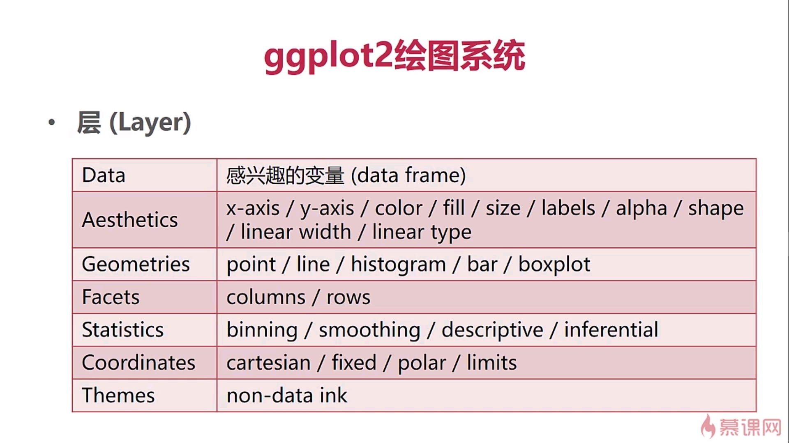

R语言
一、R的数据结构
1、对象和属性
赋值：<-
查看数值类型class(x)
属性(attribute)
- 名称(name)
- 维度(dimensions: matrix, array)
- 类型(class)
- 长度(length)
向量(vector)
只能包含同一类型的对象
创建对象
vector(“type”,length= )
c()
x <- 1:4
强制类型转换
as.logical()/as.numeric()/as.character()
矩阵(matrix)
向量+维度属性(整数向量：nrow，ncol)
创建矩阵
matrix(): 先列后行
vector()+dim()
按行/列拼接矩阵
rbind()/cbind()
查看向量属性 attributes()
列表(list)
可以包含不同类型的对象
创建列表
list()
1 | # list |
因子(factor)
分类数据/有序 vs. 无序
整数向量+标签(label)(优于整数向量)
Male/Female vs. 1/2
创建因子
factor()
整体查看因子 table()
去除因子属性 unclass()
缺失值(missing value)
- NA/NaN: NaN属于NA，NA不属于NaN
- NA有类型属性：integer NA，character NA等。而NaN只有integer
- 查看元素是否为缺失值 is.na()/is.nan()
数据框(data frame)
- 存储表格数据
视为各元素长度相同的列表
- 每个元素代表一列数据
- 每个元素的长度代表行数
- 元素的类型可以不同
创建数据框
1
df <- data.frame(id=c(1,2),name=c("a","b"),gender=c(TRUE,FALSE))
日期和时间
日期：Date
当前时间：date()/Sys.Date()
weekdays()/months()/quarters() 季度
设置时间
x <- as.Date(“2019-01-01”)
时间：POSIXct/POSIXlt
- 距离1970-01-01的秒数/Sys.time()
- POSIXct:整数，常用于存入数据框
- POSIXlt:列表，还包含星期、年、月、日等信息
- 获取某个数组里面的内容用$
二、构建子集
原始数据 -> 预处理后的数据
基本方法
- []:提供一个或多个类型相同的元素
- 元素下标从1开始
- 枚举输出x[1:4]
- 逻辑判断x[x<1 & x>5]
- 按元素名字提取a[“name”]
[[]]:从列表或数据框中提取元素
$:按名字从列表或数据框中提取元素
矩阵的子集
- 以向量形式1行2列的元素 x[1,2]
- 输出一整行 x[1, ]
- 输出x(2,3)和x(2,1) x[2,c(1,3)]
- 以矩阵形式返回 x[1,2,drop=”FALSE”]
数据框的子集
- which(x$v1>2)返回满足条件的数值
- 构建子集 subset(dateType,条件)
列表的子集
- x[1]/x[“id”] 列表的元素
- x[[1]]/x[[“id”]]/x$id 列表的内容
- 嵌套列表
x[[1][2]]/x[c(1,2)] - 不完全匹配 x[[“a”,exact=FALSE]]/x$a
处理缺省值
- 返回x,y对应位置是否有缺省值，有返回FALSE complete.cases(x,y)
向量化操作
1 | x <- 1:5 |
三、重要函数的使用
1、 lapply()
lapply(列表/其他的也会自动转换为列表，循环要处理的函数名，上一个函数所需的参数)
总是返回一个列表
sapply表示在能精简的情况下，尽可能精简处理结果
- 结果列表元素长度均为1，返回向量
- 结果列表元素长度相同且大于1，返回矩阵
- mean求平均值
2、apply
- 沿着数组的某一维度处理数据
- apply(数组，维度，函数名)
3、tapply
- 对向量的子集进行操作
- tapply (向量，因子/因子列表，函数/函数名)
4、split
- 根据因子或者因子列表将向量或其他对象分组
- 通常与lapply一起使用
- split(向量/列表/数据框，因子/因子列表)
四、R的绘图系统
1)基本绘图系统
绘图函数（graphics包）
- plot/hist/boxplot/pionts/lines/text/title/axis
- 调用函数会启用一个图形设备（如果没有正在运行的图形设备）并在设备上绘图
- 基本绘图系统+屏幕设备
plot()
重要参数：
xlab/ylab 表示x，y坐标轴标签
lwd 线宽
lty 线的类型
pch 点的类型
col 图形的颜色
par ()
用于设置全局参数(作用于R中的所有plot绘图)
bg 背景色
mar 边界边距
mfrow 当前画板划分为几行
mfcol 划分为几列
2）Lattice绘图系统
1.绘图函数
lattice包
+ xyplot 散点图函数
+ histogram 柱状图函数
+ dotplot 点图
+ contourplot
格式：xyplot(y~x|f*g,data)
- panel函数，用于控制每个面板内的绘图
grid包
- 实现了独立于base的绘图系统
- lattice包是基于grid创建的
3）Lattice与Base的重要区别
Base绘图函数直接在图形设备上绘图
Lattice绘图函数返回trellis类对象
打印函数真正执行了在设备上绘图
4）ggplot2绘图系统

绘图函数
qplot()
类似与Base系统的plot()，参数包含aesthetics/geom/facet…
ggplot()
1 | library(ggplot2) |
1 |
图形参数：
符号和线条：pch、cex、lty、lwd
颜色：col、col.axis、col.lab、col.main、col.sub、fg、bg
文本属性：cex、cex.axis、cex.lab、cex.main、cex.sub、font、font.axis、font.lab、font.main、font.sub文本添加、坐标轴的自定义和图例
title()、main、sub、xlab、ylab、text()
axis()、abline()
legend()多图绘制时候，可使用par()设置默认的图形参数
par(lwd=2, cex=1.5)图形参数设置：
par(optionname=value,…)
par(pin=c(width,height)) 图形尺寸
par(mfrow=c(nr,nc)) 图形组合，一页多图
layout(mat) 图形组合，一页多图
par(mar=c(bottom,left,top,right)) 边界尺寸
par(fig=c(x1,x2,y1,y2),new=TURE) 多图叠加或排布成一幅图
R语言绘图颜色
RColorBrewer包
- 三类调色板：sequential（渐变）/diverging（极端） /qualitative（分类变量）
参考学习博文链接：